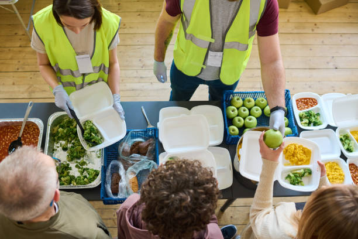
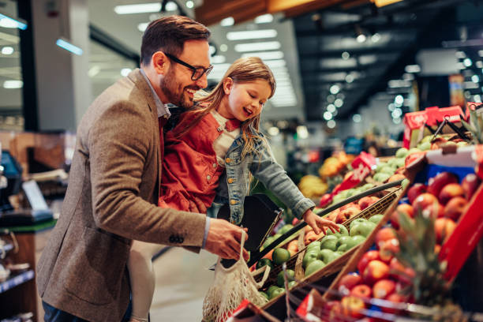
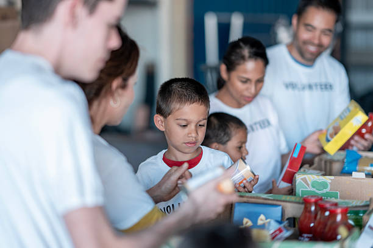
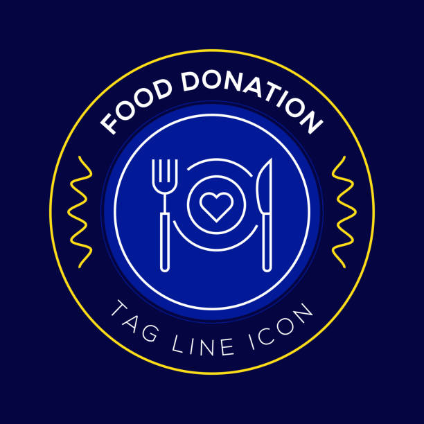
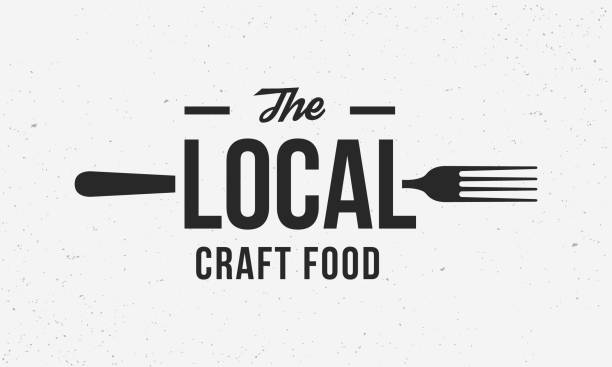
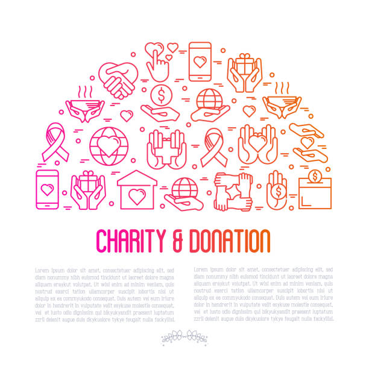

Who Can Use FreshSave?

🍽 Food Providers
List surplus & near-expiry food easily.

🤝 NGOs & Shelters
Collect food for communities in need.

👨👩👧 Low-Income Users
Access affordable, safe food nearby.
How FreshSave Works
1
Providers list food items
Restaurants, hotels, and stores quickly list surplus or near-expiry food using AI assistance.
2
AI prioritizes expiry
AI identifies and prioritizes food items closest to expiry.
3
NGOs get notified
NGOs receive alerts about available food items.
4
Food is delivered
Food is collected and delivered to communities in need.

Our Impact
FreshSave reduces food waste by redistributing surplus food to NGOs and low-income communities.
- ♻️ Reduced Food Waste
- 🍽️ Affordable Food Access
- 🌱 Sustainable Communities
Trusted By



Be a Part of the Change
Reduce food waste while supporting communities.
Get Started Now